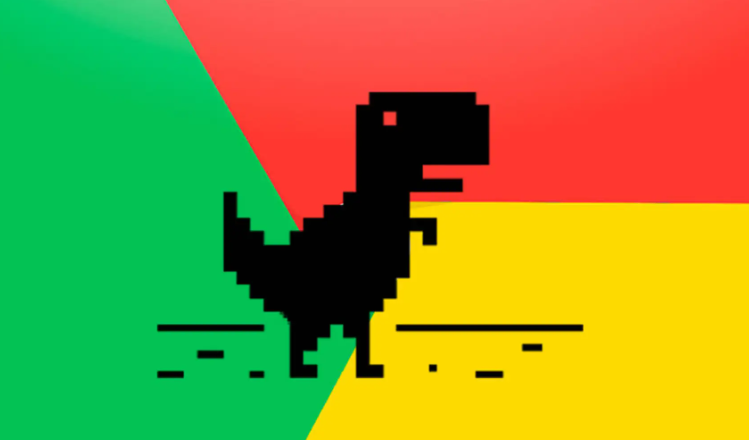

Comandos basicos Github
clonar de la forma con https: git clone
Dudas sobre Github
Git es un ejemplo de VCS, y GitHub es un sitio web + infraestructura que proporciona un servidor Git más una serie de herramientas realmente útiles para trabajar con repositorios git individuales o en equipo
Documentos Github
El directorio de Git es donde se almacenan los metadatos y la base de datos de objetos para tu proyecto. Es la parte más importante de Git, y es lo que se copia cuando clonas un repositorio desde otra computadora.
Edificio Banco Consorcio Las Condes Region Metropolitana, Chile
Dinosaurio Tiranosaurio REX
